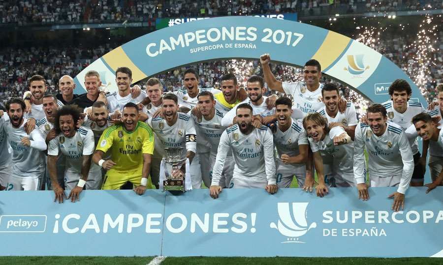

This website is created by me, Amanuel Isaak. I'm a fan of Real Madrid since 2014. I started watching since I was 9 years old. I was obssesed with the club. The was they played, the legends they had and still have, la Decima, legedary coaches and etc. They were eye catching and the players entertained in every competition.
Now I want to take the oppertiunity to share the favorite games. Sadly I wasn't lucky enough to watch any game in real life.
Super Copa Final 2017
The 2017 Copa del Rey final was a two-legged affair between Real Madrid and Barcelona. In the first leg at the Santiago Bernabeu, Real Madrid won 3-1 with goals from Lucas Vazquez, Isco, and Cristiano Ronaldo, while Lionel Messi scored for Barcelona. In the second leg at the Camp Nou, Real Madrid produced a resolute defensive display to win 2-0, with goals from Marco Asensio and Karim Benzema. Real Madrid's defense held strong, and they secured a famous victory over their bitter rivals. Winning both legs of the competition was a significant moment for Real Madrid and their fans.
El clasico 2012

Real Madrid's victory over Barcelona in the 2011/12 El Clasico match was crucial for their pursuit of the La Liga title. They won 2-1 at the Camp nous with goals from Sami Khedira and Cristiano Ronaldo, while Alexis Sanchez scored for Barcelona. The win Real Madrid's helped them build a seven-point lead at the top of the table ahead of Barcelona. The match was intense and physical, showcasing the world-class talent and skills of both teams. Real Madrid went on to win the league that season, ending Barcelona's three-year dominance in the competition. The match was also significant for Cristiano Ronaldo, who scored his 100th goal for Real Madrid, solidifying his position as one of the club's greatest players. He also saw the infamous "Calma, calma" celebration.
UCL final 2017

Real Madrid beat Juventus 4-1 in the 2017 UEFA Champions League final at the National Stadium of Wales in Cardiff. Cristiano Ronaldo scored first, followed by a stunning overhead kick from Mario Mandzukic. Real Madrid dominated the second half with goals from Casemiro, Ronaldo, and Marco Asensio. This was Real Madrid's third Champions League win in four years, making them the first team to successfully defend the title in the modern era. Ronaldo's two goals in the final also saw him become the first player to score in three different Champions League finals and finish as the top scorer with 12 goals.
Copa del rey semi-final 2023

The match-winner for the extremely efficient visitors was goal-scorer Karim Benzema, who scored a flawless hat-trick within half an hour between the 50th and 80th minutes. Vinicius Junior (45.+1) had given coach Carlo Ancelotti's team the lead in first-half injury time. The Catalans dominated the first 45 minutes but failed to get back into the game after Benzema's double strike shortly after the restart.
UCL final 2014

The 2014 UEFA Champions League final was a thrilling match between Real Madrid and Atletico Madrid. After a goalless first half, Atletico took the lead through Diego Godin in the second half, but Sergio Ramos scored a dramatic equalizer for Real Madrid in injury time to send the game into extra time. Real Madrid dominated the additional 30 minutes, with goals from Gareth Bale, Marcelo, and a penalty from Cristiano Ronaldo securing a 4-1 victory and their tenth European Cup/Champions League title in history. It was a memorable night for Real Madrid fans and a heartbreak for Atletico Madrid, who came close to their first-ever Champions League triumph.